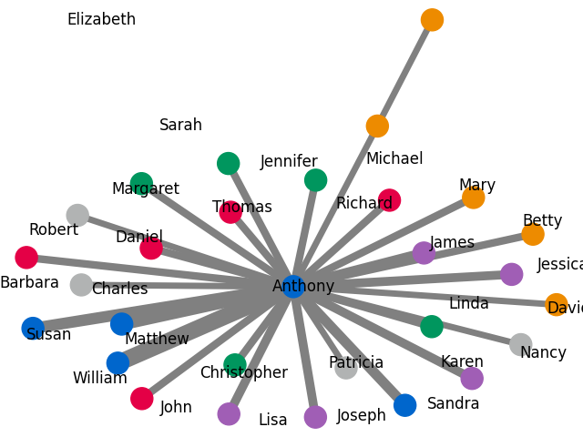
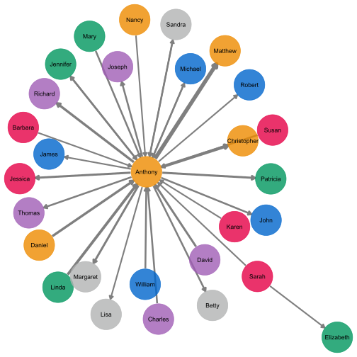
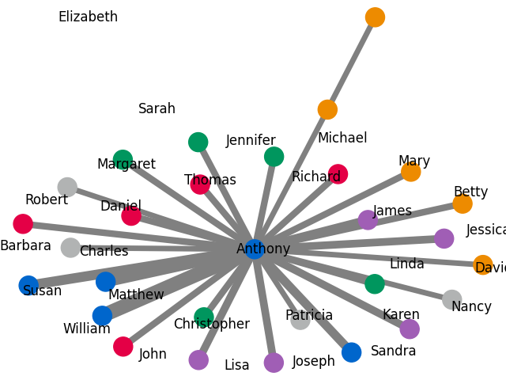
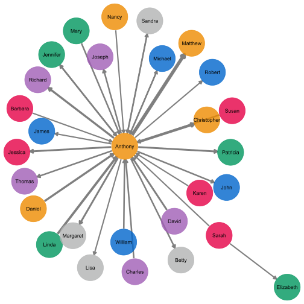

Python 2D

R 2D

R 3D



Within this small application a network including nodes and edges was visualized. The specifications for the excel sheet were the following:
The .xlsx file contains two sheets, one labeled "nodes", one "edges".
"edges_sheet" specs: row 1: contains column titles, these are used to reference the columns
"nodes_sheet" specs: row 1: contains column titles, these are used to reference the columns